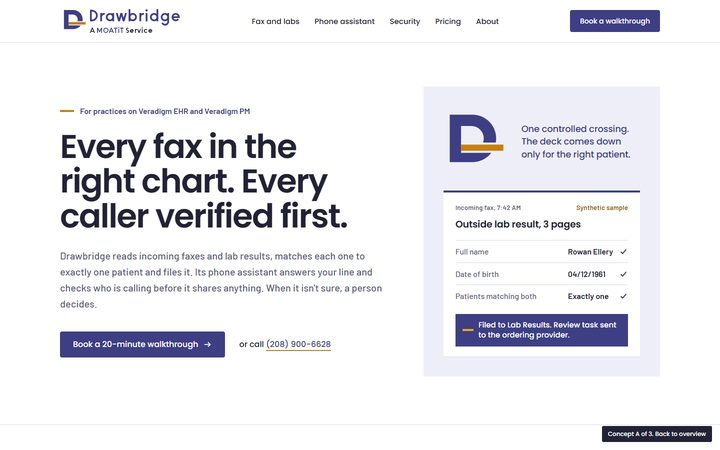
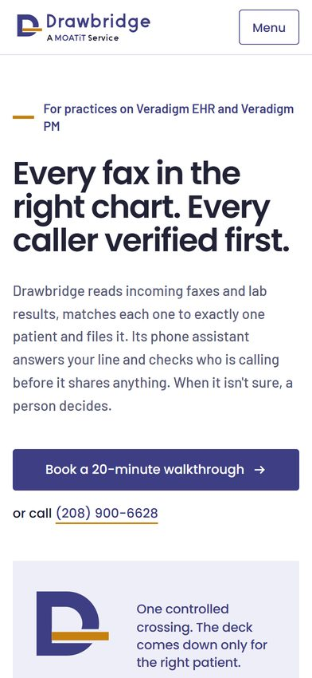
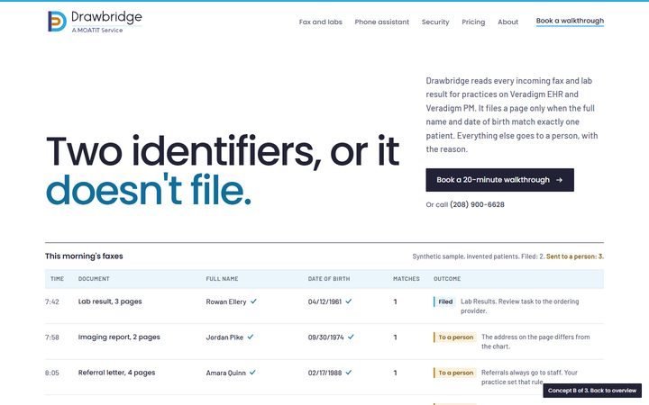
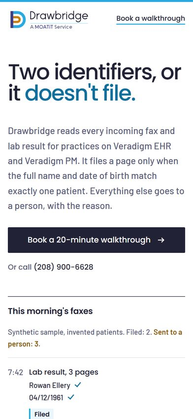
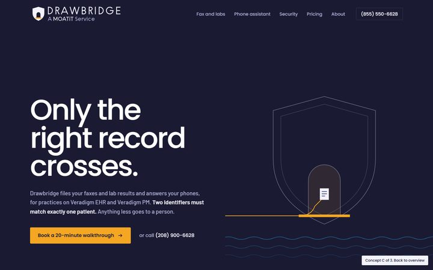
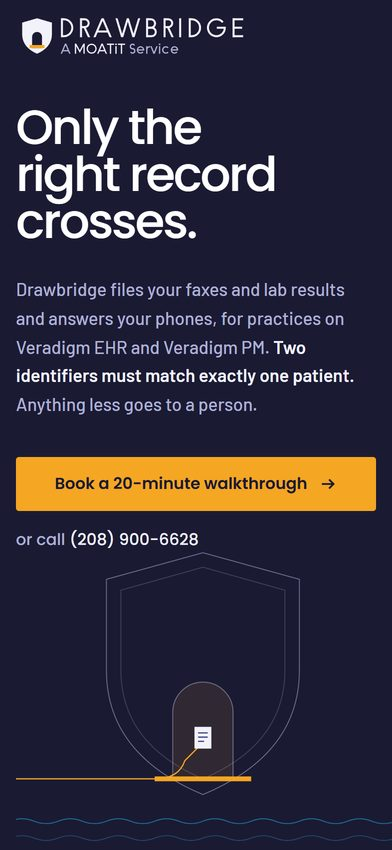

Gatehouse
Concept AThe MOATiT document style made into a product brand. White pages, navy type, gold used once per screen. The closest to what MOATiT already sends clients.
White, MOATiT navy, ink, pale navy; gold only for the deck. Poppins 600 and Barlow.


Ledger
Concept BThe product's own record made into the brand. A clinical, structured page where a morning's faxes are the hero and MOATiT blue leads.
White, ink, callout blue; MOATiT blue leads; gold means "a person decides". Poppins 500 and Barlow.


Recommended
Night Watch
Concept CMOATiT at night. Dark and atmospheric, about the work Drawbridge does while the front desk is closed. The mark is MOATiT's shield with a gate.
Night, MOATiT ink, one white section; amber is the crossing, blue the moat. Poppins 500/300 and Barlow.

